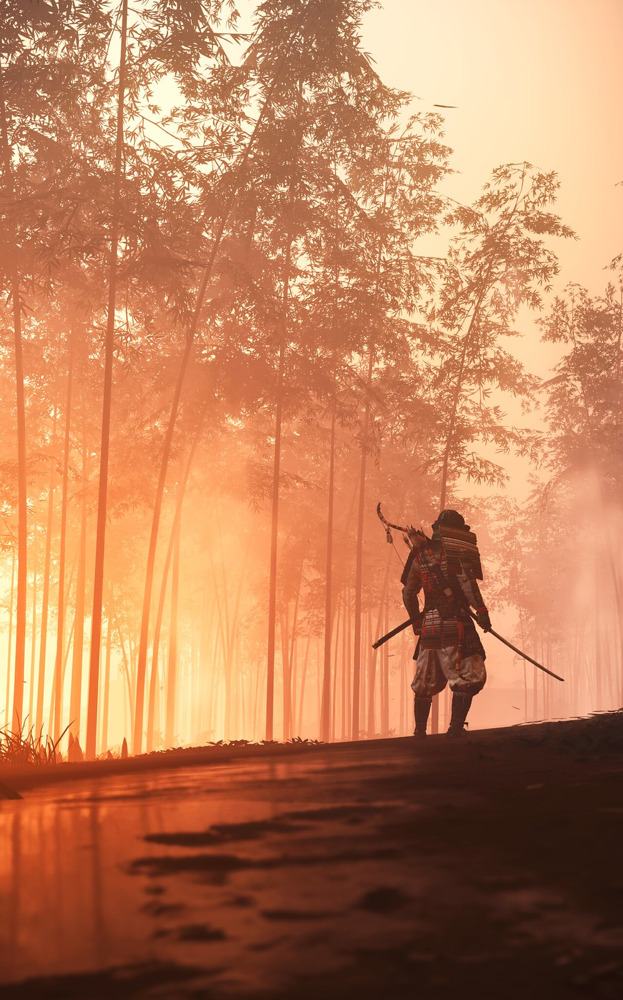
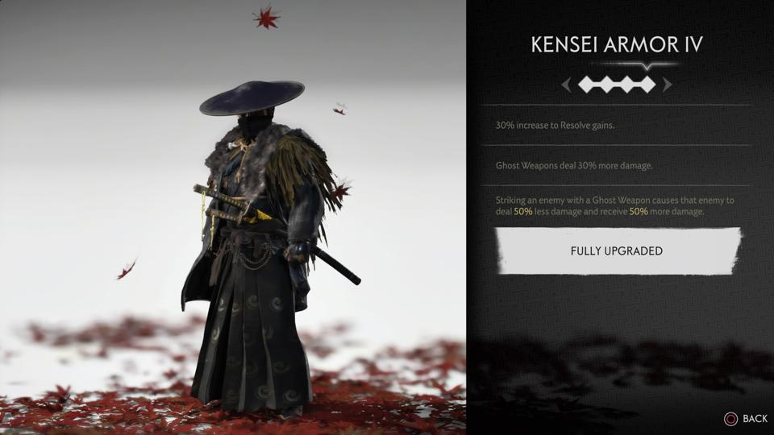
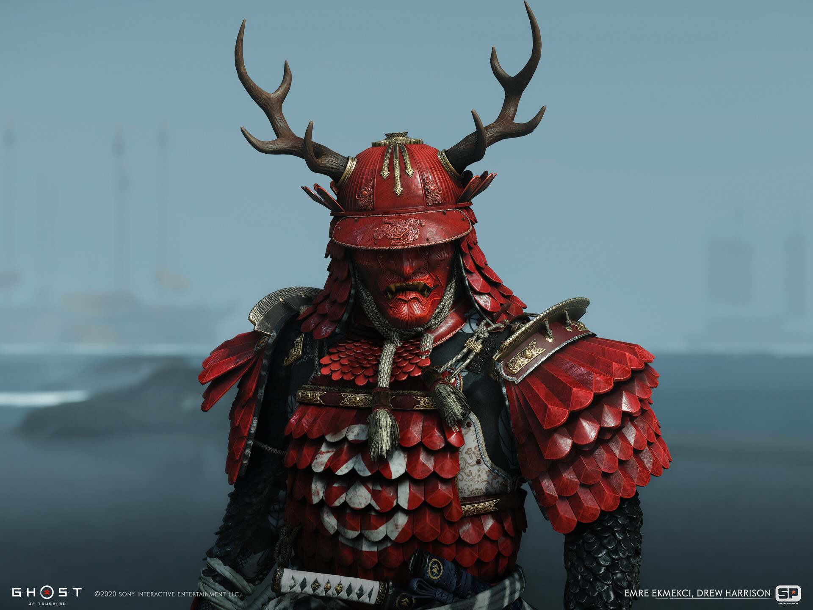
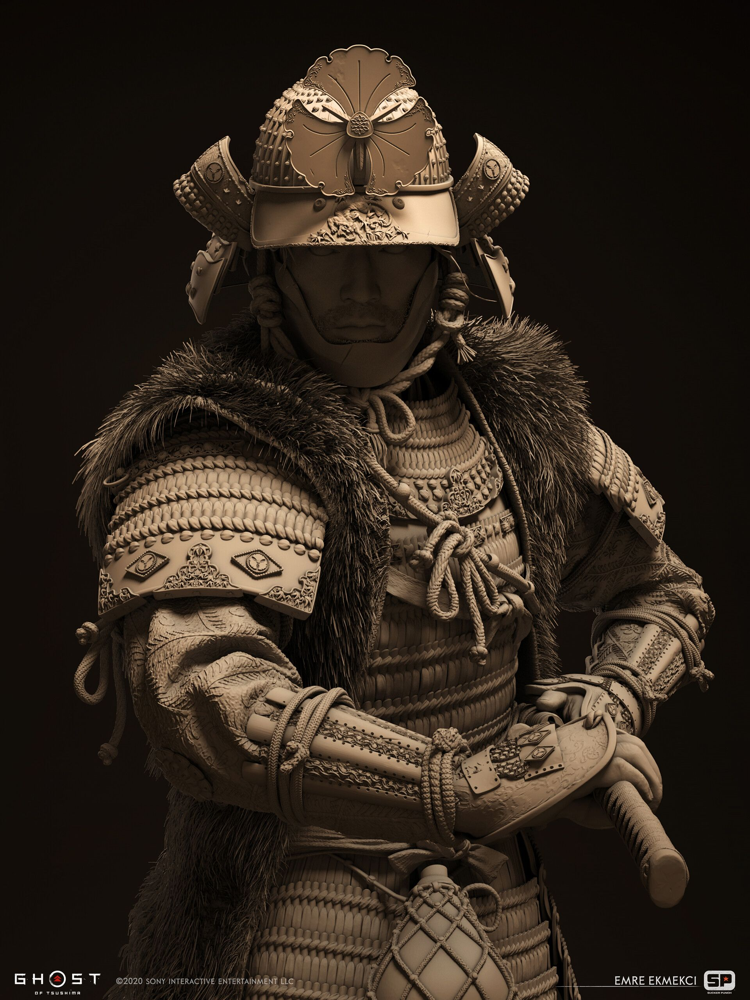
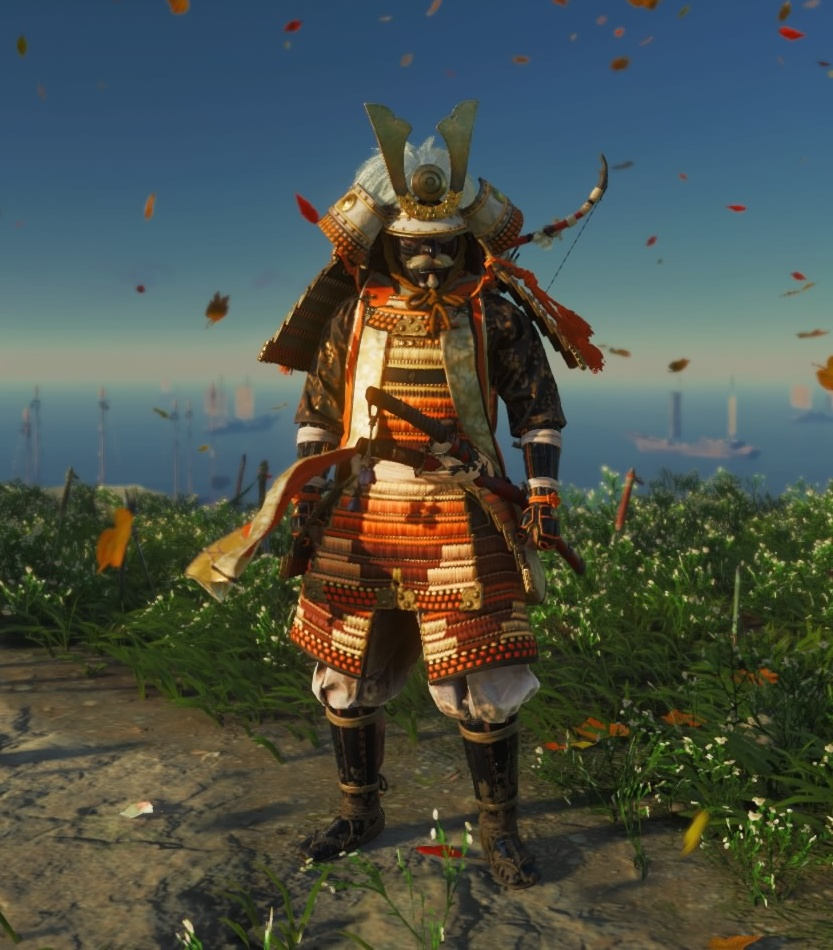
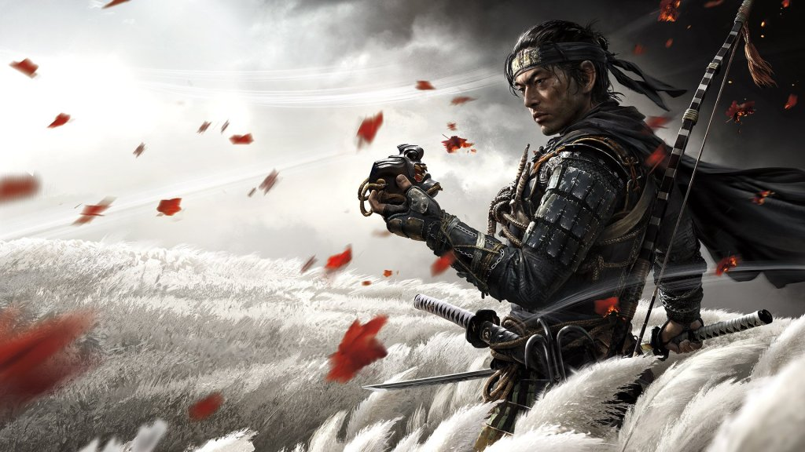

This webpage covers all the lore, game dynamics, scenery, and any other details that I liked from this masterpiece. Enjoy, and I hope this page convinces you to give it a try!
Ghost of Tsushima is a PS4 exclusive game set in 1274 B.C.E. on the tiny island of Tsushima off the coast of Japan. The game covers the Mongol invansion of Japan, which, although highly dramatized and fictionalized here, actually is based off real events - after most of his ~80 Samurai bretheren are killed on the banks of Komoda Beach, it is up to Sakai to stop the Mongols before they reach the mainland, and save is people while at it. Playing as seasoned Samurai Jin Sakai, players must face a grueling campaign as Sakai saves his uncle, challenges hoards of bloodthirsty Mongols, learns a whole hoast of different fighting stances and weapons, and becomes the Ghost to defeat Khotun Khan.
Players are also treated to great side stories and a customizable skill tree, weapons menu, adaptable stances, and feature-specific and upgradable outfits. Part of Jin Sakai's character arc is the balance between upholding bushido as a honorable Samurai and taking on oni-like attributes as the legendary Ghost. Sakai trains with many senseis that affect his viewpoint on these matters, along with making many allies from unlikely places across the island; all of these people help him shape his thoughts on how best to save his community. Sakai must also address his past as the last of the Sakai clan, and the potential successor to Lord Shimura, his uncle and Jito of the island.
This game was a pleasure to play, a true-love letter to rich story-based games, 50s-60s Samurai flicks along the lines of Kurosawa's "Seven Samurai", and the Samurai culture of days past. I' d rate it a 10/10, and I only give very few properties this rating. Personally, this story, its characters, scenery, and its acting hit so hard because it resonated so much with my life - I am obviously no battle-hardened Samurai, but I feel as though the core themes of the story are relatable, and the events in the story imitate life in a way few videogames have done before. I hope you decide to check out Ghost of Tsushima,
"Do you want to know how I was prepared for today? I learned. I know your language. Your traditions. Your beliefs. Which village to tame and which to burn."
- Khotun Khan, Ghost of Tsushima
"You have no honor." "And you are a slave to it."
- Lord Shimura and Jin Sakai, Ghost of Tsushima
| Kensei Armor | The Kensei armor is a legendary Armor that you must win from an evil spirit. It is truly chilling. |  |
|---|---|---|
| Sakai Clan Armor | The Sakai Clan Armor represents Jin's peace with his past. The scaly texture is a sight to see. |  |
| Adachi Clan Armor | The Adachi Clan Armor is a replacement for Jin's classic armor. It represents Lady Masako's pride in Jin, and Jin's Samurai side, and I always come back to it when I am roaming the map. |  |
| Gosaku's Armor | Gosaku's Armor is a vibrant and bulky armor fit for a legendary hero. It strikes fear within the evil and spirit within the good. |  |
| Ghost Armor | The Ghost Armor is the epitome of Jin's transformation into the fearsome Ghost of legend. Just as Jin hides his identity when the Ghost takes over, the Ghost hides in plain sight, within the shadows of the night. |  |
Email: GOTpage@fpmail.com
Phone: 444-444-4444